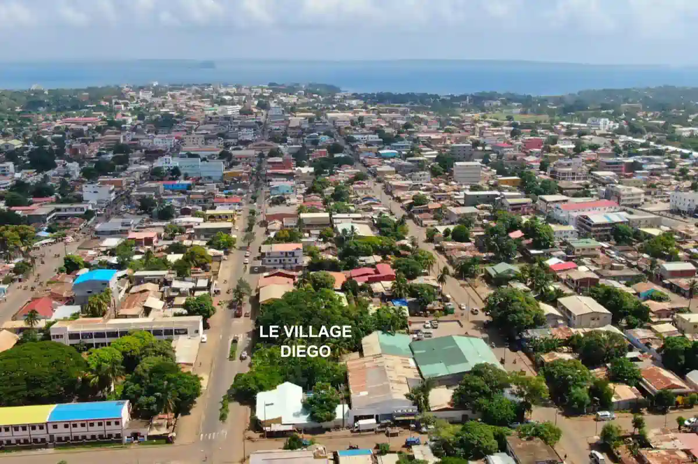

La Ville Basse
Histoire, architecture et diversité culturelle
Ancienne base militaire française, Diego Suarez conserve de nombreux vestiges de la colonisation. La ville basse est le cœur historique, composée de plusieurs ethnies qui y vivent en harmonie, créant une richesse culturelle unique au nord de Madagascar.
Patrimoine colonial
Multiethnie
Histoire riche
Commerce vivant
Repères historiques
XVIe s.
Découverte par les explorateurs portugais Diego Diaz et Fernando Suarez.
XVIIe s.
La baie devient un refuge pour les pirates qui sillonnent l'océan Indien.
1885
Établissement de la base militaire coloniale française, structurant la ville actuelle.
1960
Indépendance de Madagascar. Antsiranana devient chef-lieu de la province.


